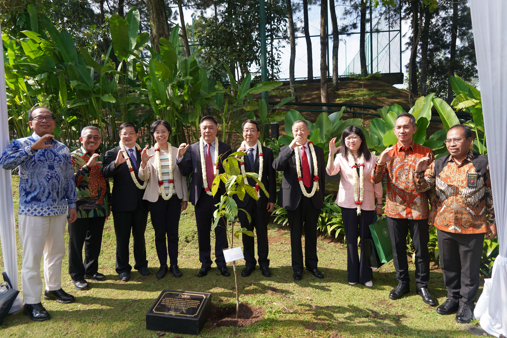

.png)

Kerjasama: Kunjungan Mahkamah Agung Cina: Perkuat Kerjasama Hukum dan Pelestarian Lingkungan
Tujuan: Memperkuat kerjasama dalam perlindungan inovasi dan kreativitas
Kasus: Mahkamah Agung Republik Rakyat Tiongkok (China) melakukan kunjungan resmi ke Indonesia dengan tujuan mempererat kerjasama bilateral dalam bidang hukum dan lingkungan. Salah satu momen penting dalam kunjungan ini adalah kuliah umum yang diselenggarakan di MA Corporate University tentang HKI (Hak Kekayaan Intelektual) dimana kuliah ini menjadi langkah penting dalam memperdalam pemahaman antara kedua negara tentang isu-isu terkini dalam HKI dan memperkuat kerjasama dalam perlindungan inovasi dan kreativitas. Ada Diskusi yang berlangsung setelah kuliah ini menyoroti pentingnya kerjasama internasional dalam menghadapi tantangan terkait HKI di era globalisasi. Selain kegiatan akademis, delegasi Mahkamah Agung Cina juga membantu dalam upaya pelestarian lingkungan dengan melakukan penanaman pohon di sekitar area Mahkamah Agung Corporate University. Kegiatan ini dihadiri oleh perwakilan dari kedua mahkamah serta pihak-pihak lainnya. Kunjungan ini tidak hanya membawa manfaat praktis dalam kerjasama hukum dan lingkungan, tetapi juga menggambarkan komitmen bersama antara Indonesia dan Cina dalam mengatasi tantangan global yang semakin kompleks.